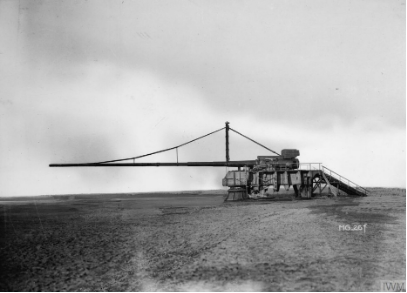

El Cañón de París
En el último año de la Gran Guerra (1918), el Alto Mando Alemán desplegó una de las armas más audaces y tecnológicamente extremas de la historia: el Cañón de París (Paris-Geschütz). A menudo confundido con la "Gran Bertha", esta pieza de artillería de la firma Krupp no fue diseñada para destruir trincheras, sino para un propósito puramente psicológico: bombardear la capital francesa desde una distancia de más de 120 kilómetros, un alcance que en aquel entonces se consideraba físicamente imposible.

Historia
Lo que hace al Cañón de París un objeto de estudio fascinante no es solo su tamaño, sino los desafíos científicos que sus ingenieros tuvieron que resolver por primera vez en la historia militar:
- Navegación Estratosférica: Los proyectiles eran disparados con tal potencia que alcanzaban una altitud de 40 kilómetros. Al viajar por la estratosfera, donde el aire es extremadamente tenue, encontraban una resistencia mínima, lo que permitía que el proyectil cubriera distancias intercontinentales para los estándares de la época.
- El Efecto Coriolis: Fue la primera arma de la historia que obligó a los artilleros a calcular la rotación de la Tierra. Si no se tenía en cuenta el movimiento del planeta durante los 170 segundos de vuelo del proyectil, este fallaba por cientos de metros.
- Ingeniería de Precisión: El disparo era tan violento que cada proyectil erosionaba una capa de acero del interior del ánima. Por ello, cada munición era ligeramente más grande que la anterior y estaban numeradas del 1 al 60 para ser disparadas en un orden estricto.
Características
Para evitar una lectura densa, los datos técnicos se resumen en los siguientes puntos clave:
- Longitud del cañón: 34 metros (tan largo que requería cables tensores para evitar que se curvara por su propio peso).
- Velocidad de salida: 1,600 m/s (casi cinco veces la velocidad del sonido).
- Peso del proyectil: Aproximadamente 106 kg.
- Calibre inicial: 211 mm (aumentando con el uso debido al desgaste).
Desempeño Operativo y Efecto Psicológico
El 23 de marzo de 1918, cuando los primeros proyectiles cayeron sobre París, la confusión fue total. Los ciudadanos creían estar bajo un ataque de aviones invisibles o zepelines a gran altura, ya que el frente de batalla estaba a más de 100 kilómetros de distancia. A lo largo de su servicio, el cañón disparó unos 320 proyectiles. Si bien el daño material no fue suficiente para obligar a Francia a rendirse, el impacto psicológico fue inmenso, forzando a miles de personas a evacuar la ciudad y demostrando que la tecnología alemana podía alcanzar cualquier punto "seguro" detrás de las líneas.
Conclusión
El Cañón de París fue mucho más que una pieza de artillería; fue el precursor de la era espacial y de los misiles balísticos modernos. Aunque militarmente no cambió el resultado de la Primera Guerra Mundial, su legado reside en haber sido el primer ingenio humano en romper la barrera de la baja atmósfera. Al final de la guerra, los alemanes destruyeron todas las unidades y planos para ocultar sus secretos, dejando a este coloso como uno de los grandes misterios técnicos del siglo XX.